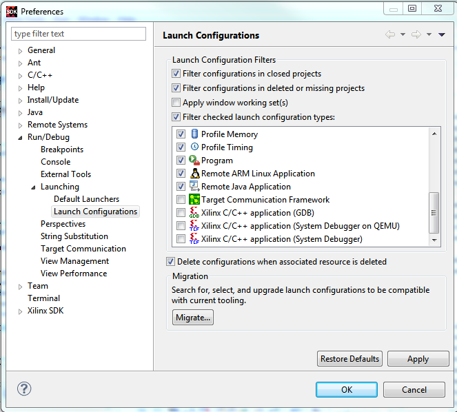

The Launch Configurations page allows you set filtering options that are used throughout the workbench to limit the exposure of certain kinds of launch configurations. These filtering setting affect the launch dialog, launch histories and the workbench.

| Option | Description | Default |
|---|---|---|
| Filter configurations in closed projects | Filter out configurations that are associated with a project that is currently closed | On |
| Filter configurations in deleted or missing projects | Filter out configurations that are associated with a project that has been deleted or are simply no longer available | On |
| Apply windows working set | Applies the filtering from any working sets currently active to the visibility of configurations associated to resources in the active working sets. i.e. if project P has two configurations associated with it, but is not in the currently active working set, the configurations do not appear in the UI, much like P does not. | On |
| Filter checked launch configuration types | Filter all configurations of the selected type regardless of the other filtering
options. The checked options will not be displayed in the Run/Debug Configurations
dialog box. Note: To avoid any confusions, only configurations that are supported by SDK
are available by default.
|
On |
| Delete configurations when associated project is deleted | Any launch configurations associated with a project being deleted will also be deleted if this option is enabled. Once deleted the configurations are not recoverable. | On |
| Migrate |
As new features are added to the launching framework, there sometimes exists the need to make changes to launch configurations. Some of these changes are made automatically, but those that are not (nonreversible ones) are left up to the end-user. The migration section allows you to self-migrate any launch configurations that require it. Upon pressing the Migrate... button, if there are any configurations requiring migration, they are presented to you, and you can select the ones that you want to migrate. |